問題の要約
円環状に並んだ N 個の位置へ、M 種類の色を割り当てる。
隣接する位置の色がすべて異なるような割り当て数を、指定された法で求める。
考察
まず、直線に並んでいるだけなら考え方は単純。
位置 1 は M 通り、位置 2 以降は直前と違う色を選ぶだけなので、それぞれ M - 1 通りになる。
しかし、この問題は円環なので、最後に位置 N と位置 1 も比べる必要がある。
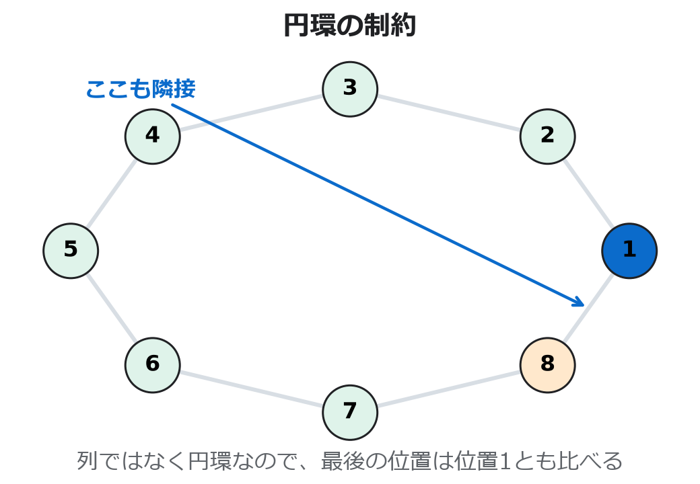
N と位置 1 の色も確認する必要がある。超初心者向けの見方
この問題では、色を左から順に決めていく。
ただし円環なので、最後に位置 N と位置 1 も比べる。
そのため、位置 1 の色を基準色として覚えておく。
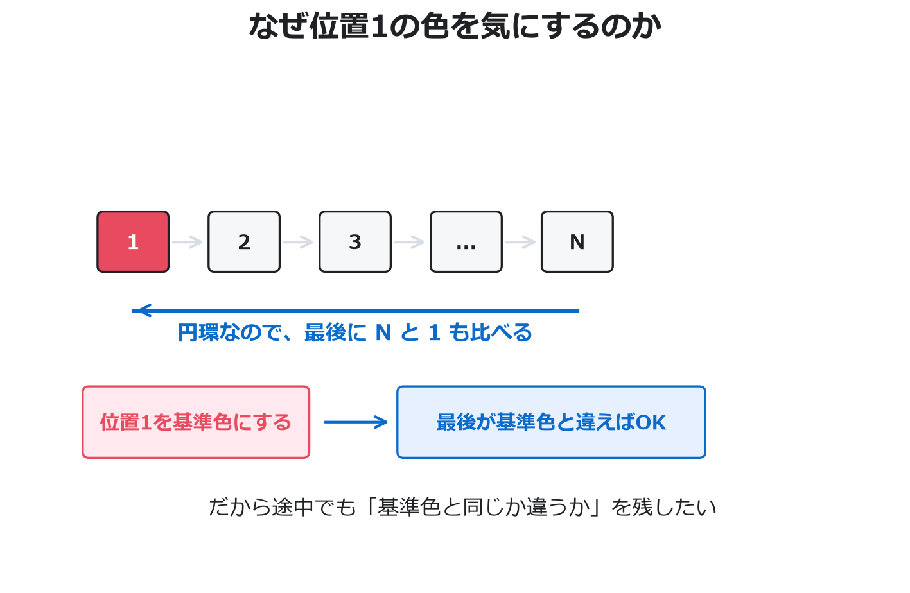
N と位置 1 を比べるため、位置 1 の色を基準にする。
same と diff は、色の名前ではない。
「最後に決めた位置が基準色と同じ並べ方はいくつあるか」
「最後に決めた位置が基準色と違う並べ方はいくつあるか」
を入れる箱として見る。
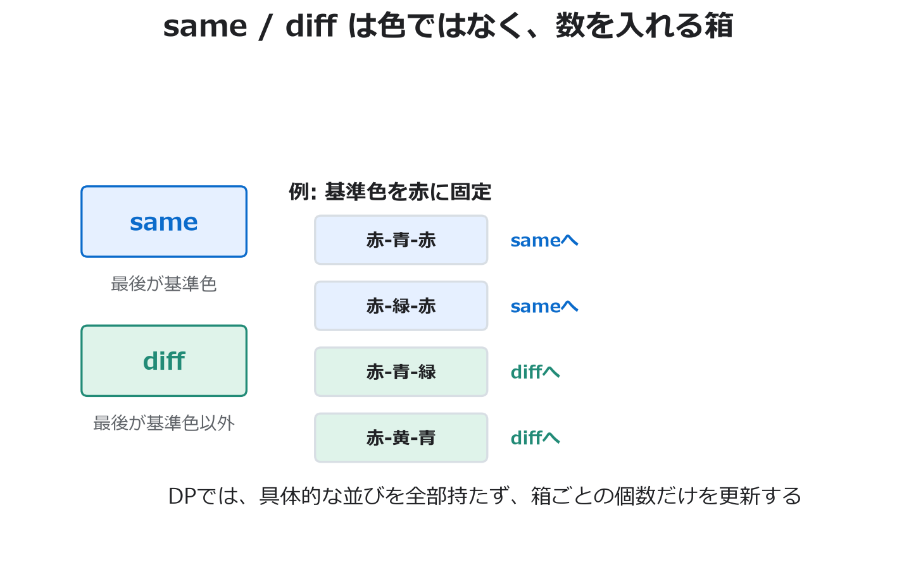
same / diff は色ではなく、条件を満たす並べ方の個数を入れる箱。
次の色を1つ選ぶときは、質問を2つに分ける。
まず、直前の色と同じなら選べない。
次に、選べた色が基準色なら same、基準色でなければ diff に入れる。
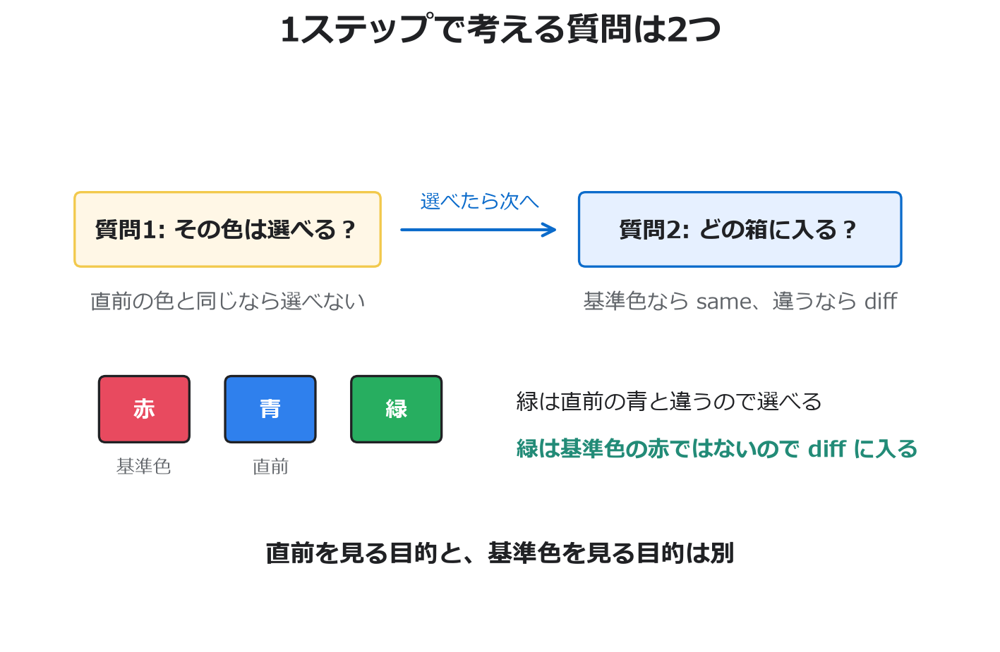
この箱の移動をまとめると、更新式になる。
古い same からは M - 1 通りで新しい diff へ行く。
古い diff からは、1通りで新しい same へ、M - 2 通りで新しい diff へ行く。
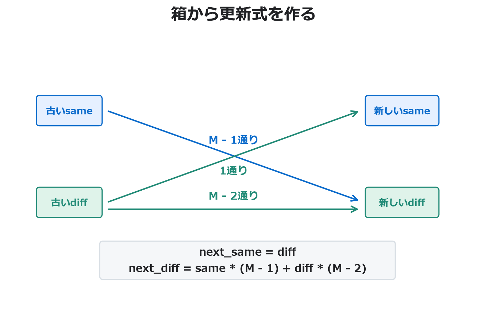
別観点: M = 5 でさらに見る
もう一度、別の数字で見る。
今度は色が5種類あり、基準色を紫に固定したとする。
ここでも大事なのは、具体的な並びを全部覚えるのではなく、最後の色だけを見て same / diff の箱へ仕分けること。
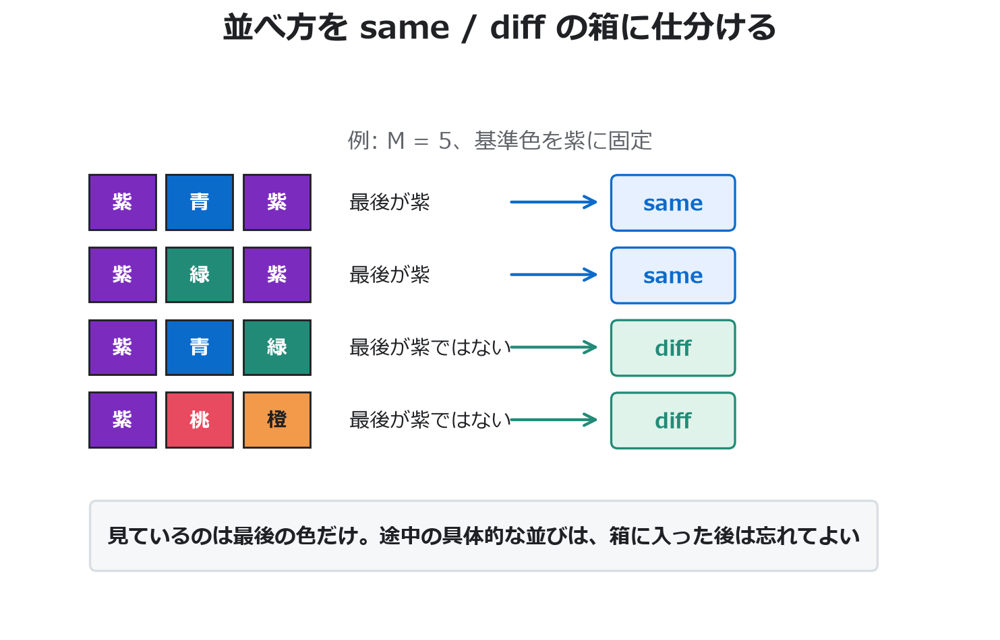
直前が same の場合、直前の色は基準色の紫。
次の色に紫は選べないので、残り4色を選ぶ。
どれも紫ではないため、すべて diff へ行く。
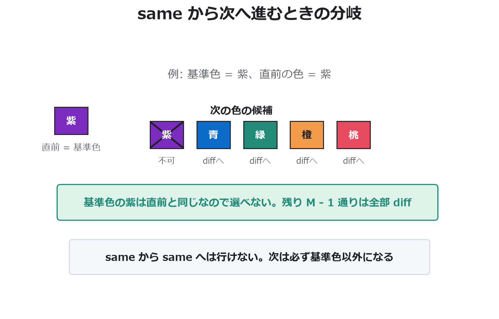
same からは、基準色を選べない。残り M - 1 通りは全部 diff。
直前が diff の場合、たとえば直前の色を青として考える。
次に青は選べないが、基準色の紫は選べる。
紫を選べば same、紫でも青でもない色を選べば diff へ行く。
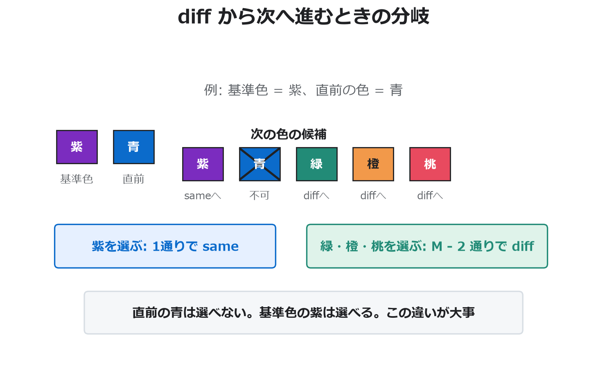
diff からは、基準色を選ぶ1通りで same、基準色でも直前でもない M - 2 通りで diff。
最後に欲しいのは diff の箱。
なぜなら、位置 1 は基準色なので、位置 N が基準色なら円環の条件に反するから。
固定した基準色に対して diff を数えたあと、基準色そのものの選び方 M 通りを掛ける。
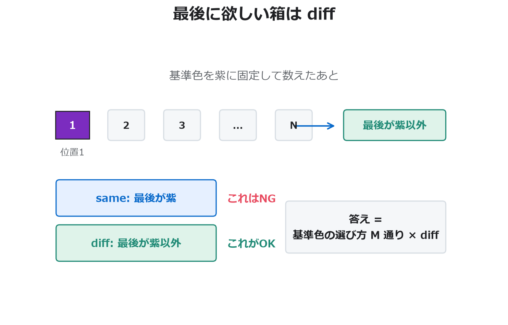
最後に位置 1 と比べたいので、位置 1 の色を特別扱いする。
ここでは、位置 1 の色を「基準色」と呼ぶ。
いったん基準色を1つに固定して数え、最後に基準色の選び方 M 通りを掛ける。
例として、色が4種類あり、基準色を赤に固定したとする。
このとき、青・緑・黄はどれも「赤ではない色」としてまとめて扱える。
最後に知りたいのは、位置 N が赤か、赤ではないかだから。
そこで、色の名前を全部覚えるのではなく、最後に決めた位置が基準色かどうかだけを見る。
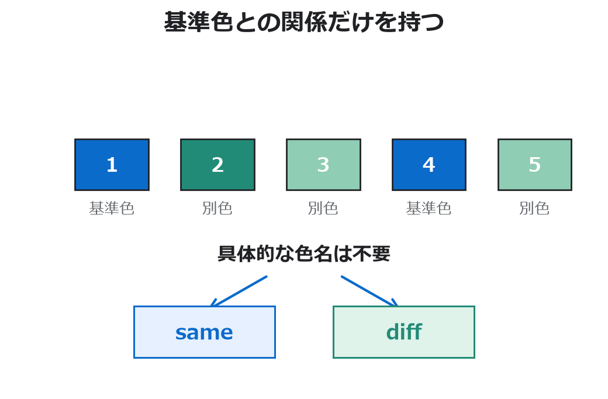
same は、最後に決めた位置が基準色と同じである並べ方の数。
diff は、最後に決めた位置が基準色と違う並べ方の数。
どちらも「色」ではなく「並べ方の個数」を入れる箱だと考える。
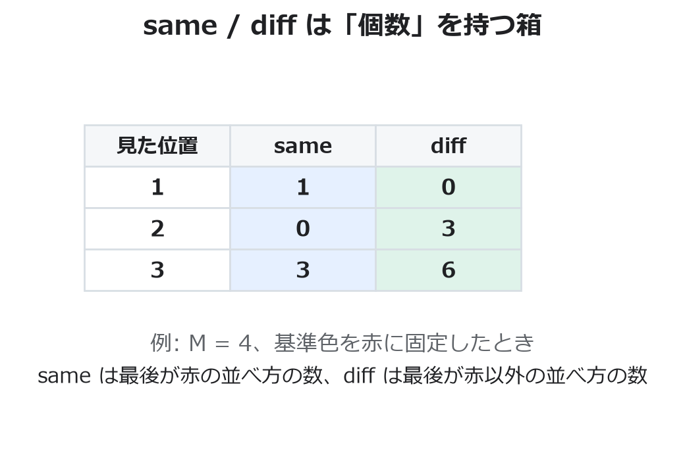
same と diff は状態名であり、その中身は並べ方の個数。
初期状態は、位置 1 だけを決めた状態。
基準色に固定しているので、最後の位置は基準色と同じ。
したがって same = 1、diff = 0 から始める。
次に、位置を1つ追加するときの動きを考える。
ここで大事なのは、2段階に分けること。
まず「直前の色と同じ色は選べない」という隣接条件で候補を消す。
そのあと、選んだ色が基準色かどうかで、次の箱を same と diff に振り分ける。
直前が same の場合、具体例では直前の色が赤。
隣接条件により、次の色に赤は選べない。
つまり、青・緑・黄のどれかを選ぶしかない。
どれを選んでも赤ではないので、次の状態は必ず diff になる。
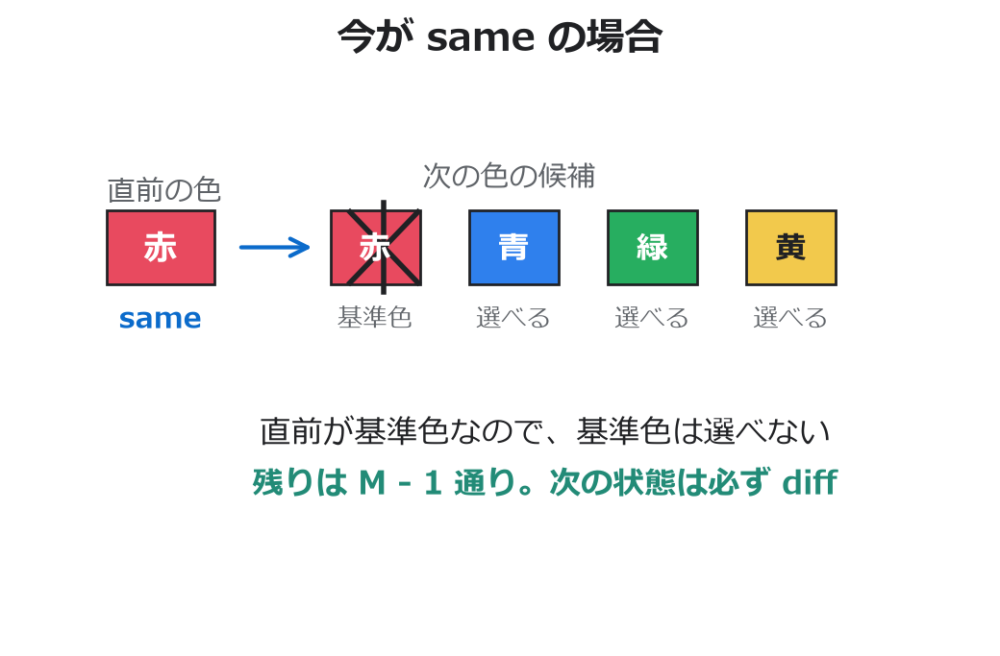
same からは、基準色以外を選ぶしかない。一般化すると M - 1 通りで diff へ移る。
直前が diff の場合、具体例では直前の色が青だと考えてよい。
隣接条件により、次の色に青は選べない。
しかし赤は選べる。赤は直前の青とは違うから。
赤を選ぶと次の状態は same になる。
これは基準色を選ぶ1通り。
同じく直前が青のとき、緑や黄も選べる。
これらは基準色ではないので、次の状態は diff になる。
選べない色は、基準色の赤ではなく、直前の青。
ただし diff のままに残りたい場合は、赤も選ばない。
だから、赤と青の2色を除いた M - 2 通りが diff へ行く。
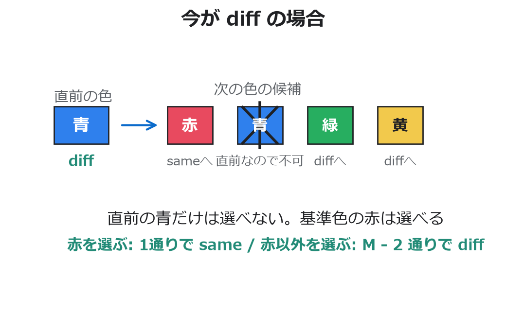
diff からは、基準色を選ぶ1通りで same、基準色でも直前でもない色を選ぶ M - 2 通りで diff へ移る。
ここまでを式にすると、次のようになる。
新しい same は、古い diff から基準色を選ぶ1通りだけで作られる。
新しい diff は、古い same から M - 1 通り、古い diff から M - 2 通りで作られる。
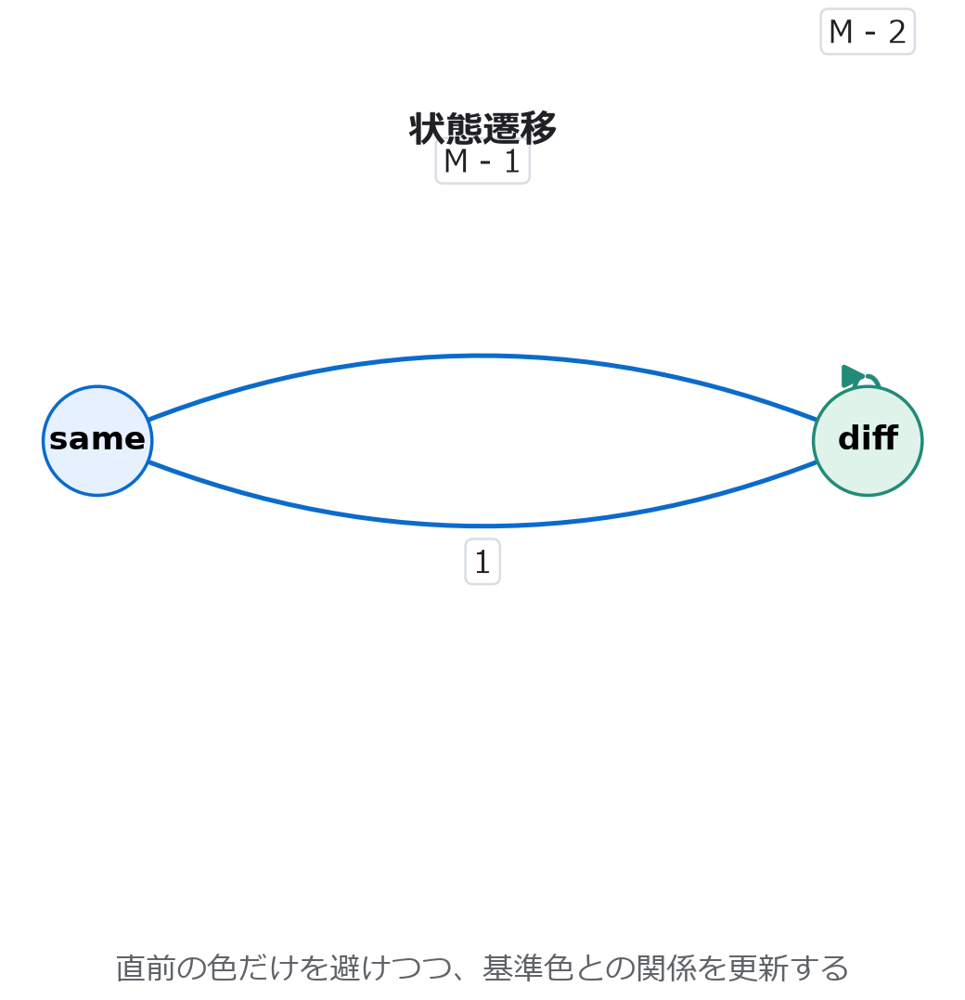
same と diff の間を、選べる色の数で遷移する。next_same = diff
next_diff = same * (M - 1) + diff * (M - 2)
最後に位置 N まで決め終えたとき、円環として成立するには位置 N が位置 1 と違う色でなければならない。
位置 1 は基準色なので、有効なのは最後が基準色ではない diff の並べ方だけ。
ここまでは基準色を1つに固定していたので、最後に基準色の選び方 M 通りを掛ける。
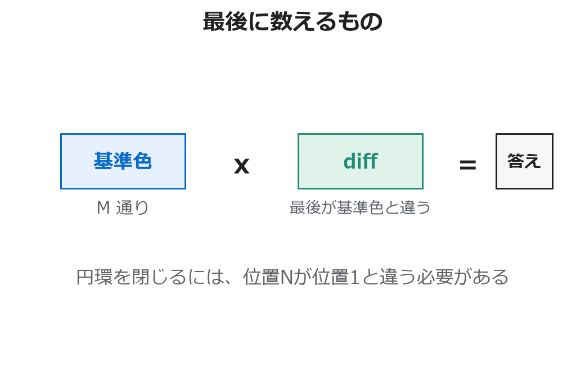
diff を数え、最後に基準色の選び方を掛ける。まとめると、色を選ぶ瞬間は直前の色を見る。 しかし、DPの状態として残すのは基準色との関係だけ。 最後に円環を閉じるとき、必要なのが「基準色と違うか」だから、この情報だけ残せば足りる。
解法方針
- 位置
1の色を固定し、基準色として扱う。 sameを「現在位置の色が基準色と同じ」、diffを「基準色と違う」と定義する。- 初期状態は位置
1だけを見ているので、same = 1、diff = 0。 - 位置
2からNまで、隣接制約を守るようにsameとdiffを更新する。 - 最後は位置
Nが基準色と違う必要があるため、固定した基準色に対する有効数はdiff。 - 基準色の選び方が
M通りあるので、答えはM * diff。
実装の注意点
更新式では、古い same と diff を同時に使う。
片方を先に上書きするともう片方の計算が壊れるので、next_same と next_diff を作ってから代入する。
すべての計算は指定された法で行う。
最後の M 倍も忘れずに同じ法で取る。
コード
MOD = 998244353
N, M = map(int, input().split())
same = 1
diff = 0
for _ in range(2, N + 1):
next_same = diff
next_diff = same * (M - 1) + diff * (M - 2)
same = next_same % MOD
diff = next_diff % MOD
print((M * diff) % MOD)まとめ
円環をそのまま扱うと、最後に位置 1 との関係を確認する必要がある。
位置 1 の色を固定し、現在位置がその色と同じか違うかだけを追うことで、
最後の条件まで自然に扱える。
この問題は実装量よりも、状態をどう圧縮するかが本質。 具体的な色ではなく、基準色との関係に注目するのが重要だった。